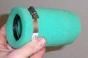

Spare parts / Air filter
Intake
Air filter
Fits: petrol engine. Also called air cleaner, filter element.
Replace5,000-12,000 km (dusty roads sooner)
Typical priceUS$ 4 to 50
Difficulty1 of 5
Safety-criticalNo
 Illustration
IllustrationWorkshop photos




Pick your bike
BMW
Bajaj
Haojue
Harley-Davidson
Hero
Honda
- Shine 100/125
- Activa 110/125
- Super Cub / Wave 110
- BeAT
- Vario 125/160
- Scoopy
- PCX 125/160
- Ace CB125
- CG125 / CG160
- Grom
- Navi
- CB650R / CBR650R
- Gold Wing
- GB350S / H'ness CB350
- CB125F